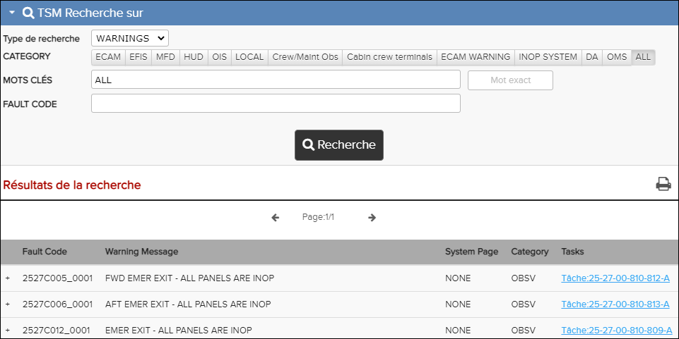

WARNINGS est un type de recherche dans la Recherche sur TSM. Pour plus de détails sur les champs de recherche, voir Recherche sur TSM.
- Ouvrez une publication TSM dans le volet Bibliothèque.
- Ouvrez la Recherche sur TSM.
- Dans la liste déroulante de Type de recherche, choisissez le WARNINGS.
-
Effectuez l'un des choix suivants:
- Saisissez une faute code complète ou partielle dans le champ Fault Code .
- Saisissez les mots-clés dans le champ MOTS-CLES. Cochez la case Mot Exacte si vous voulez correspondre exactement au texte saisi dans le champ MOTS-CLES.
- Saisissez le ATA CODE.
- Sélectionnez la portée de la recherche en utilisant le bouton Catégorie: ECAM, SD, LOCAL, EFIS, OBSV or TOUS.
- Cliquez sur le bouton Rechercher.
Le critère correspondant à votre recherche apparaîtra dans la fenêtre Résultats de recherche montrant le code ATA et le message d'erreur. Vous pouvez cliquer sur une entrée dans la liste des résultats pour'étendre la ligne et voir les messages d'avertissement corrélatifs, les messages d'erreur corrélés, les Identificateurs et les causes possibles. Vous pouvez également ouvrir la tâche en cliquant sur le lien du document.

Résultat de la recherche d'avertissements